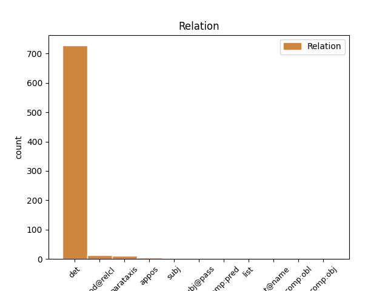
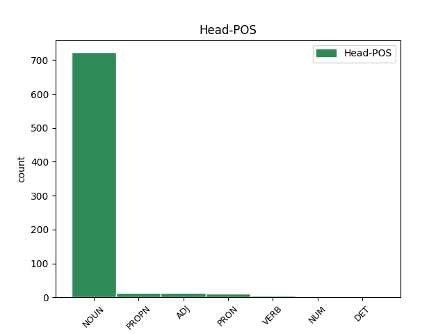
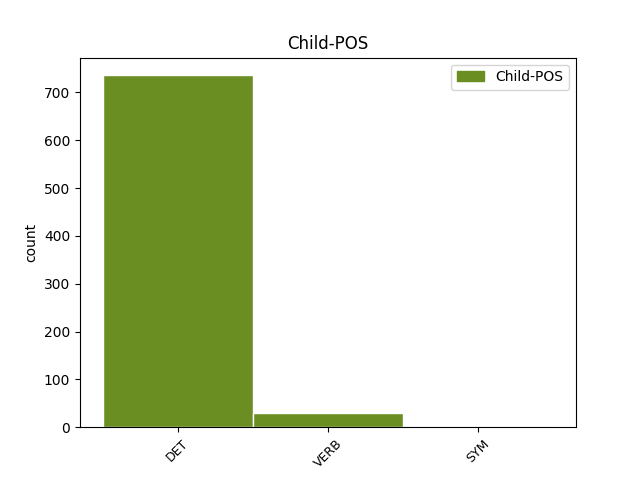

Distribution of features within this leaf



Agreement Rules sorted by frequency.
- When the dependent token is the determiner(det) of the head token, and the dependent token is DET.
1 В _ _ _ _ 0 _ _ _
2 те тот DET DT Animacy=Inan|Case=Acc|Number=Plur 3 det _ _
3 годы год NOUN NN Animacy=Inan|Case=Acc|Gender=Masc|Number=Plur 0 _ _ _
4 в _ _ _ _ 0 _ _ _
5 селе _ _ _ _ 0 _ _ _
6 был _ _ _ _ 0 _ _ _
7 птичник _ _ _ _ 0 _ _ _
8 и _ _ _ _ 0 _ _ _
9 разбит _ _ _ _ 0 _ _ _
10 колхозный _ _ _ _ 0 _ _ _
11 сад _ _ _ _ 0 _ _ _
12 . _ _ _ _ 0 _ _ _
1 Станция _ _ _ _ 0 _ _ _
2 эстакадная эстакадный ADJ JJL Case=Nom|Degree=Pos|Gender=Fem|Number=Sing 0 _ _ _
3 , _ _ _ _ 0 _ _ _
4 на _ _ _ _ 0 _ _ _
5 всём _ _ _ _ 0 _ _ _
6 её _ _ _ _ 0 _ _ _
7 протяжении _ _ _ _ 0 _ _ _
8 расположен расположить VERB VBNH Animacy=Inan|Aspect=Perf|Case=Nom|Gender=Masc|Number=Sing|Tense=Past|Variant=Short|VerbForm=Part|Voice=Pass 2 parataxis _ _
9 высокий _ _ _ _ 0 _ _ _
10 навес _ _ _ _ 0 _ _ _
11 , _ _ _ _ 0 _ _ _
12 который _ _ _ _ 0 _ _ _
13 поддерживают _ _ _ _ 0 _ _ _
14 колонны _ _ _ _ 0 _ _ _
15 , _ _ _ _ 0 _ _ _
16 расположенные _ _ _ _ 0 _ _ _
17 между _ _ _ _ 0 _ _ _
18 путями _ _ _ _ 0 _ _ _
19 . _ _ _ _ 0 _ _ _
1 Эта _ _ _ _ 0 _ _ _
2 же _ _ _ _ 0 _ _ _
3 фотография _ _ _ _ 0 _ _ _
4 использована _ _ _ _ 0 _ _ _
5 и _ _ _ _ 0 _ _ _
6 в _ _ _ _ 0 _ _ _
7 обложке _ _ _ _ 0 _ _ _
8 к _ _ _ _ 0 _ _ _
9 синглу _ _ _ _ 0 _ _ _
10 `` _ _ _ _ 0 _ _ _
11 Non _ _ _ _ 0 _ _ _
12 ti _ _ _ _ 0 _ _ _
13 accorgevi _ _ _ _ 0 _ _ _
14 di _ _ _ _ 0 _ _ _
15 me _ _ _ _ 0 _ _ _
16 '' _ _ _ _ 0 _ _ _
17 , _ _ _ _ 0 _ _ _
18 но _ _ _ _ 0 _ _ _
19 в _ _ _ _ 0 _ _ _
20 данном _ _ _ _ 0 _ _ _
21 варианте _ _ _ _ 0 _ _ _
22 виден _ _ _ _ 0 _ _ _
23 лишь _ _ _ _ 0 _ _ _
24 силуэт силуэт NOUN NN Animacy=Inan|Case=Nom|Gender=Masc|Number=Sing 0 _ _ _
25 певца _ _ _ _ 0 _ _ _
26 , _ _ _ _ 0 _ _ _
27 который _ _ _ _ 0 _ _ _
28 окрашен окрасить VERB VBNH Animacy=Inan|Aspect=Perf|Case=Nom|Gender=Masc|Number=Sing|Tense=Past|Variant=Short|VerbForm=Part|Voice=Pass 24 mod@relcl _ _
29 в _ _ _ _ 0 _ _ _
30 чёрный _ _ _ _ 0 _ _ _
31 цвет _ _ _ _ 0 _ _ _
32 . _ _ _ _ 0 _ _ _
1 Пациент _ _ _ _ 0 _ _ _
2 должен должен ADJ JJH Case=Nom|Degree=Pos|Gender=Masc|Number=Sing|Variant=Short 0 _ _ _
3 быть _ _ _ _ 0 _ _ _
4 проинформирован проинформировать VERB VBNH Animacy=Anim|Aspect=Perf|Case=Nom|Gender=Masc|Number=Sing|Tense=Past|Variant=Short|VerbForm=Part|Voice=Pass 2 comp:pred _ _
5 о _ _ _ _ 0 _ _ _
6 необходимости _ _ _ _ 0 _ _ _
7 сообщать _ _ _ _ 0 _ _ _
8 врачу _ _ _ _ 0 _ _ _
9 о _ _ _ _ 0 _ _ _
10 всех _ _ _ _ 0 _ _ _
11 случаях _ _ _ _ 0 _ _ _
12 побочных _ _ _ _ 0 _ _ _
13 реакций _ _ _ _ 0 _ _ _
14 , _ _ _ _ 0 _ _ _
15 в _ _ _ _ 0 _ _ _
16 том _ _ _ _ 0 _ _ _
17 числе _ _ _ _ 0 _ _ _
18 не _ _ _ _ 0 _ _ _
19 перечисленных _ _ _ _ 0 _ _ _
20 в _ _ _ _ 0 _ _ _
21 данной _ _ _ _ 0 _ _ _
22 инструкции _ _ _ _ 0 _ _ _
23 . _ _ _ _ 0 _ _ _
1 Некоторые некоторый DET DT Case=Nom|Number=Plur 5 subj@pass _ _
2 из _ _ _ _ 0 _ _ _
3 найденных _ _ _ _ 0 _ _ _
4 артефактов _ _ _ _ 0 _ _ _
5 представлены представить VERB VBNH Animacy=Inan|Aspect=Perf|Case=Nom|Number=Plur|Tense=Past|Variant=Short|VerbForm=Part|Voice=Pass 0 _ _ _
6 в _ _ _ _ 0 _ _ _
7 музее _ _ _ _ 0 _ _ _
8 Músaem _ _ _ _ 0 _ _ _
9 Chorca _ _ _ _ 0 _ _ _
10 Dhuibhne _ _ _ _ 0 _ _ _
11 , _ _ _ _ 0 _ _ _
12 расположенном _ _ _ _ 0 _ _ _
13 неподалёку _ _ _ _ 0 _ _ _
14 от _ _ _ _ 0 _ _ _
15 Беллиферритера _ _ _ _ 0 _ _ _
16 . _ _ _ _ 0 _ _ _
1 Ленина _ _ _ _ 0 _ _ _
2 ( _ _ _ _ 0 _ _ _
3 1928-40 _ _ _ _ 0 _ _ _
4 , _ _ _ _ 0 _ _ _
5 архитекторы _ _ _ _ 0 _ _ _
6 -- _ _ _ _ 0 _ _ _
7 Владимир _ _ _ _ 0 _ _ _
8 Щуко _ _ _ _ 0 _ _ _
9 , _ _ _ _ 0 _ _ _
10 Владимир _ _ _ _ 0 _ _ _
11 Гельфрейх _ _ _ _ 0 _ _ _
12 ) _ _ _ _ 0 _ _ _
13 , _ _ _ _ 0 _ _ _
14 театр _ _ _ _ 0 _ _ _
15 в _ _ _ _ 0 _ _ _
16 Ростове _ _ _ _ 0 _ _ _
17 - _ _ _ _ 0 _ _ _
18 на _ _ _ _ 0 _ _ _
19 - _ _ _ _ 0 _ _ _
20 Дону _ _ _ _ 0 _ _ _
21 ( _ _ _ _ 0 _ _ _
22 1930-35 1930-35 ADJ ORD Case=Nom|Degree=Pos|Gender=Masc|Number=Sing 0 _ _ _
23 , _ _ _ _ 0 _ _ _
24 те тот DET DT Case=Nom|Number=Plur 22 list _ _
25 же _ _ _ _ 0 _ _ _
26 ; _ _ _ _ 0 _ _ _
27 взорван _ _ _ _ 0 _ _ _
28 нацистами _ _ _ _ 0 _ _ _
29 , _ _ _ _ 0 _ _ _
30 позже _ _ _ _ 0 _ _ _
31 восстановлен _ _ _ _ 0 _ _ _
32 ) _ _ _ _ 0 _ _ _
33 , _ _ _ _ 0 _ _ _
34 здание _ _ _ _ 0 _ _ _
35 комбината _ _ _ _ 0 _ _ _
36 газеты _ _ _ _ 0 _ _ _
37 `` _ _ _ _ 0 _ _ _
38 Правда _ _ _ _ 0 _ _ _
39 '' _ _ _ _ 0 _ _ _
40 ( _ _ _ _ 0 _ _ _
41 1931 _ _ _ _ 0 _ _ _
42 -- _ _ _ _ 0 _ _ _
43 1935 _ _ _ _ 0 _ _ _
44 , _ _ _ _ 0 _ _ _
45 Пантелеймон _ _ _ _ 0 _ _ _
46 Голосов _ _ _ _ 0 _ _ _
47 ) _ _ _ _ 0 _ _ _
48 , _ _ _ _ 0 _ _ _
49 ансамбль _ _ _ _ 0 _ _ _
50 площади _ _ _ _ 0 _ _ _
51 Дзержинского _ _ _ _ 0 _ _ _
52 в _ _ _ _ 0 _ _ _
53 Харькове _ _ _ _ 0 _ _ _
54 со _ _ _ _ 0 _ _ _
55 зданием _ _ _ _ 0 _ _ _
56 Госпрома _ _ _ _ 0 _ _ _
57 ( _ _ _ _ 0 _ _ _
58 Сергей _ _ _ _ 0 _ _ _
59 Серафимов _ _ _ _ 0 _ _ _
60 и _ _ _ _ 0 _ _ _
61 Самуил _ _ _ _ 0 _ _ _
62 Кравец _ _ _ _ 0 _ _ _
63 ) _ _ _ _ 0 _ _ _
64 . _ _ _ _ 0 _ _ _
1 Однако _ _ _ _ 0 _ _ _
2 после _ _ _ _ 0 _ _ _
3 победы _ _ _ _ 0 _ _ _
4 над _ _ _ _ 0 _ _ _
5 старыми _ _ _ _ 0 _ _ _
6 милитаристами милитарист NOUN NN Animacy=Anim|Case=Ins|Gender=Masc|Number=Plur 0 _ _ _
7 , _ _ _ _ 0 _ _ _
8 такими такой DET DT Case=Ins|Number=Plur 6 appos _ _
9 как _ _ _ _ 0 _ _ _
10 У _ _ _ _ 0 _ _ _
11 Пэйфу _ _ _ _ 0 _ _ _
12 и _ _ _ _ 0 _ _ _
13 Сунь _ _ _ _ 0 _ _ _
14 Чуаньфан _ _ _ _ 0 _ _ _
15 , _ _ _ _ 0 _ _ _
16 в _ _ _ _ 0 _ _ _
17 1930 _ _ _ _ 0 _ _ _
18 -- _ _ _ _ 0 _ _ _
19 1940 _ _ _ _ 0 _ _ _
20 годах _ _ _ _ 0 _ _ _
21 появились _ _ _ _ 0 _ _ _
22 новые _ _ _ _ 0 _ _ _
23 мятежные _ _ _ _ 0 _ _ _
24 генералы _ _ _ _ 0 _ _ _
25 , _ _ _ _ 0 _ _ _
26 не _ _ _ _ 0 _ _ _
27 желавшие _ _ _ _ 0 _ _ _
28 признавать _ _ _ _ 0 _ _ _
29 власть _ _ _ _ 0 _ _ _
30 центрального _ _ _ _ 0 _ _ _
31 правительства _ _ _ _ 0 _ _ _
32 , _ _ _ _ 0 _ _ _
33 что _ _ _ _ 0 _ _ _
34 доставляло _ _ _ _ 0 _ _ _
35 большое _ _ _ _ 0 _ _ _
36 неудобство _ _ _ _ 0 _ _ _
37 для _ _ _ _ 0 _ _ _
38 Гоминьдана _ _ _ _ 0 _ _ _
39 во _ _ _ _ 0 _ _ _
40 времена _ _ _ _ 0 _ _ _
41 Второй _ _ _ _ 0 _ _ _
42 мировой _ _ _ _ 0 _ _ _
43 войны _ _ _ _ 0 _ _ _
44 и _ _ _ _ 0 _ _ _
45 последующей _ _ _ _ 0 _ _ _
46 за _ _ _ _ 0 _ _ _
47 ней _ _ _ _ 0 _ _ _
48 гражданской _ _ _ _ 0 _ _ _
49 войны _ _ _ _ 0 _ _ _
50 . _ _ _ _ 0 _ _ _
1 Порфирий _ _ _ _ 0 _ _ _
2 , _ _ _ _ 0 _ _ _
3 ссылаясь _ _ _ _ 0 _ _ _
4 на _ _ _ _ 0 _ _ _
5 некоего _ _ _ _ 0 _ _ _
6 Евбула _ _ _ _ 0 _ _ _
7 , _ _ _ _ 0 _ _ _
8 отмечает _ _ _ _ 0 _ _ _
9 , _ _ _ _ 0 _ _ _
10 что _ _ _ _ 0 _ _ _
11 пещеру _ _ _ _ 0 _ _ _
12 в _ _ _ _ 0 _ _ _
13 горах _ _ _ _ 0 _ _ _
14 , _ _ _ _ 0 _ _ _
15 цветущую _ _ _ _ 0 _ _ _
16 и _ _ _ _ 0 _ _ _
17 богатую _ _ _ _ 0 _ _ _
18 источниками _ _ _ _ 0 _ _ _
19 , _ _ _ _ 0 _ _ _
20 впервые _ _ _ _ 0 _ _ _
21 посвятил _ _ _ _ 0 _ _ _
22 Митре _ _ _ _ 0 _ _ _
23 Зороастр _ _ _ _ 0 _ _ _
24 , _ _ _ _ 0 _ _ _
25 причём _ _ _ _ 0 _ _ _
26 эта _ _ _ _ 0 _ _ _
27 пещера _ _ _ _ 0 _ _ _
28 -- _ _ _ _ 0 _ _ _
29 образ _ _ _ _ 0 _ _ _
30 космоса _ _ _ _ 0 _ _ _
31 , _ _ _ _ 0 _ _ _
32 созданного _ _ _ _ 0 _ _ _
33 Митрой _ _ _ _ 0 _ _ _
34 , _ _ _ _ 0 _ _ _
35 а _ _ _ _ 0 _ _ _
36 находившееся находиться VERB VBNL Animacy=Inan|Aspect=Imp|Case=Nom|Gender=Neut|Number=Sing|Tense=Past|VerbForm=Part|Voice=Act 39 subj _ _
37 внутри _ _ _ _ 0 _ _ _
38 -- _ _ _ _ 0 _ _ _
39 символы символ NOUN NN Animacy=Inan|Case=Nom|Gender=Masc|Number=Plur 0 _ _ _
40 космических _ _ _ _ 0 _ _ _
41 стихий _ _ _ _ 0 _ _ _
42 и _ _ _ _ 0 _ _ _
43 сторон _ _ _ _ 0 _ _ _
44 света _ _ _ _ 0 _ _ _
45 ( _ _ _ _ 0 _ _ _
46 аналогично _ _ _ _ 0 _ _ _
47 , _ _ _ _ 0 _ _ _
48 по _ _ _ _ 0 _ _ _
49 Порфирию _ _ _ _ 0 _ _ _
50 , _ _ _ _ 0 _ _ _
51 космос _ _ _ _ 0 _ _ _
52 сравнивали _ _ _ _ 0 _ _ _
53 с _ _ _ _ 0 _ _ _
54 пещерой _ _ _ _ 0 _ _ _
55 пифагорейцы _ _ _ _ 0 _ _ _
56 и _ _ _ _ 0 _ _ _
57 Платон _ _ _ _ 0 _ _ _
58 ) _ _ _ _ 0 _ _ _
59 . _ _ _ _ 0 _ _ _
1 Лексикализация _ _ _ _ 0 _ _ _
2 является _ _ _ _ 0 _ _ _
3 механизмом _ _ _ _ 0 _ _ _
4 пополнения _ _ _ _ 0 _ _ _
5 как _ _ _ _ 0 _ _ _
6 общеупотребительной _ _ _ _ 0 _ _ _
7 , _ _ _ _ 0 _ _ _
8 так _ _ _ _ 0 _ _ _
9 и _ _ _ _ 0 _ _ _
10 специальной _ _ _ _ 0 _ _ _
11 и _ _ _ _ 0 _ _ _
12 терминологической _ _ _ _ 0 _ _ _
13 лексики _ _ _ _ 0 _ _ _
14 , _ _ _ _ 0 _ _ _
15 в _ _ _ _ 0 _ _ _
16 результате _ _ _ _ 0 _ _ _
17 которой _ _ _ _ 0 _ _ _
18 лексикализованные _ _ _ _ 0 _ _ _
19 сочетания _ _ _ _ 0 _ _ _
20 в _ _ _ _ 0 _ _ _
21 конечном _ _ _ _ 0 _ _ _
22 итоге _ _ _ _ 0 _ _ _
23 входят _ _ _ _ 0 _ _ _
24 в _ _ _ _ 0 _ _ _
25 языковую _ _ _ _ 0 _ _ _
26 норму _ _ _ _ 0 _ _ _
27 ; _ _ _ _ 0 _ _ _
28 при _ _ _ _ 0 _ _ _
29 этом _ _ _ _ 0 _ _ _
30 в _ _ _ _ 0 _ _ _
31 случае _ _ _ _ 0 _ _ _
32 пополнения _ _ _ _ 0 _ _ _
33 общеупотребительной _ _ _ _ 0 _ _ _
34 лексики _ _ _ _ 0 _ _ _
35 преобладает _ _ _ _ 0 _ _ _
36 дескриптивное _ _ _ _ 0 _ _ _
37 ( _ _ _ _ 0 _ _ _
38 описательное _ _ _ _ 0 _ _ _
39 ) _ _ _ _ 0 _ _ _
40 установление _ _ _ _ 0 _ _ _
41 нормы _ _ _ _ 0 _ _ _
42 фиксацией _ _ _ _ 0 _ _ _
43 узуальных _ _ _ _ 0 _ _ _
44 употреблений _ _ _ _ 0 _ _ _
45 лексикализированных _ _ _ _ 0 _ _ _
46 сочетаний _ _ _ _ 0 _ _ _
47 во _ _ _ _ 0 _ _ _
48 фразеологических _ _ _ _ 0 _ _ _
49 словарях _ _ _ _ 0 _ _ _
50 , _ _ _ _ 0 _ _ _
51 а _ _ _ _ 0 _ _ _
52 при _ _ _ _ 0 _ _ _
53 пополнении _ _ _ _ 0 _ _ _
54 терминологий _ _ _ _ 0 _ _ _
55 , _ _ _ _ 0 _ _ _
56 прескриптивная прескриптивный ADJ JJL Case=Nom|Degree=Pos|Gender=Fem|Number=Sing 0 _ _ _
57 ( _ _ _ _ 0 _ _ _
58 предписывающая предписывать VERB VBNL Animacy=Inan|Aspect=Imp|Case=Nom|Gender=Fem|Number=Sing|Tense=Pres|VerbForm=Part|Voice=Act 56 appos _ SpaceAfter=No
59 ) _ _ _ _ 0 _ _ _
60 кодификация _ _ _ _ 0 _ _ _
61 терминологическими _ _ _ _ 0 _ _ _
62 комиссиями _ _ _ _ 0 _ _ _
63 в _ _ _ _ 0 _ _ _
64 терминологических _ _ _ _ 0 _ _ _
65 сборниках _ _ _ _ 0 _ _ _
66 . _ _ _ _ 0 _ _ _
1 Её _ _ _ _ 0 _ _ _
2 капитализация капитализация NOUN NN Animacy=Inan|Case=Nom|Gender=Fem|Number=Sing 0 _ _ _
3 ( _ _ _ _ 0 _ _ _
4 $ $ SYM _ Case=Nom|NumType=Card 2 parataxis _ SpaceAfter=No
5 19,2 _ _ _ _ 0 _ _ _
6 млрд _ _ _ _ 0 _ _ _
7 на _ _ _ _ 0 _ _ _
8 январь _ _ _ _ 0 _ _ _
9 2012 _ _ _ _ 0 _ _ _
10 года _ _ _ _ 0 _ _ _
11 ) _ _ _ _ 0 _ _ _
12 составляет _ _ _ _ 0 _ _ _
13 существенную _ _ _ _ 0 _ _ _
14 долю _ _ _ _ 0 _ _ _
15 ( _ _ _ _ 0 _ _ _
16 до _ _ _ _ 0 _ _ _
17 трети _ _ _ _ 0 _ _ _
18 в _ _ _ _ 0 _ _ _
19 2007 _ _ _ _ 0 _ _ _
20 году _ _ _ _ 0 _ _ _
21 ) _ _ _ _ 0 _ _ _
22 совокупной _ _ _ _ 0 _ _ _
23 рыночной _ _ _ _ 0 _ _ _
24 капитализации _ _ _ _ 0 _ _ _
25 всех _ _ _ _ 0 _ _ _
26 финских _ _ _ _ 0 _ _ _
27 компаний _ _ _ _ 0 _ _ _
28 , _ _ _ _ 0 _ _ _
29 котирующихся _ _ _ _ 0 _ _ _
30 на _ _ _ _ 0 _ _ _
31 Фондовой _ _ _ _ 0 _ _ _
32 бирже _ _ _ _ 0 _ _ _
33 Хельсинки _ _ _ _ 0 _ _ _
34 -- _ _ _ _ 0 _ _ _
35 уникальная _ _ _ _ 0 _ _ _
36 ситуация _ _ _ _ 0 _ _ _
37 для _ _ _ _ 0 _ _ _
38 развитой _ _ _ _ 0 _ _ _
39 индустриальной _ _ _ _ 0 _ _ _
40 страны _ _ _ _ 0 _ _ _
41 . _ _ _ _ 0 _ _ _
1 Общий _ _ _ _ 0 _ _ _
2 уровень _ _ _ _ 0 _ _ _
3 технических _ _ _ _ 0 _ _ _
4 опций _ _ _ _ 0 _ _ _
5 однотипен _ _ _ _ 0 _ _ _
6 с _ _ _ _ 0 _ _ _
7 Citroën _ _ _ _ 0 _ _ _
8 C4 _ _ _ _ 0 _ _ _
9 II _ _ _ _ 0 _ _ _
10 , _ _ _ _ 0 _ _ _
11 но _ _ _ _ 0 _ _ _
12 некоторые некоторый DET DT Case=Nom|Number=Plur 15 subj _ _
13 из _ _ _ _ 0 _ _ _
14 них _ _ _ _ 0 _ _ _
15 применены применить VERB VBNH Animacy=Inan|Aspect=Perf|Case=Nom|Number=Plur|Tense=Past|Variant=Short|VerbForm=Part|Voice=Pass 0 _ _ _
16 на _ _ _ _ 0 _ _ _
17 DS4 _ _ _ _ 0 _ _ _
18 уже _ _ _ _ 0 _ _ _
19 в _ _ _ _ 0 _ _ _
20 базовой _ _ _ _ 0 _ _ _
21 комплектации _ _ _ _ 0 _ _ _
22 . _ _ _ _ 0 _ _ _
Disagree Examples:
1 Механизмы _ _ _ _ 0 _ _ _
2 аутентификации _ _ _ _ 0 _ _ _
3 гарантируют _ _ _ _ 0 _ _ _
4 , _ _ _ _ 0 _ _ _
5 что _ _ _ _ 0 _ _ _
6 только _ _ _ _ 0 _ _ _
7 добросовестным _ _ _ _ 0 _ _ _
8 абонентам _ _ _ _ 0 _ _ _
9 , _ _ _ _ 0 _ _ _
10 обладающим _ _ _ _ 0 _ _ _
11 добросовестным _ _ _ _ 0 _ _ _
12 оборудованием _ _ _ _ 0 _ _ _
13 , _ _ _ _ 0 _ _ _
14 то то PRON DT Animacy=Inan|Case=Nom|Gender=Neut|Number=Sing 0 _ _ _
15 есть _ _ _ _ 0 _ _ _
16 не _ _ _ _ 0 _ _ _
17 украденным украсть VERB VBNL Animacy=Inan|Aspect=Perf|Case=Ins|Gender=Neut|Number=Sing|Tense=Past|VerbForm=Part|Voice=Pass 14 comp:obj _ _
18 или _ _ _ _ 0 _ _ _
19 нестандартным _ _ _ _ 0 _ _ _
20 , _ _ _ _ 0 _ _ _
21 будет _ _ _ _ 0 _ _ _
22 предоставлен _ _ _ _ 0 _ _ _
23 доступ _ _ _ _ 0 _ _ _
24 сети _ _ _ _ 0 _ _ _
25 . _ _ _ _ 0 _ _ _
1 Каждому каждый DET DT Case=Dat|Gender=Masc|Number=Sing 6 comp:obl _ _
2 из _ _ _ _ 0 _ _ _
3 девяти _ _ _ _ 0 _ _ _
4 друзей _ _ _ _ 0 _ _ _
5 Соника _ _ _ _ 0 _ _ _
6 посвящены посвятить VERB VBNH Animacy=Inan|Aspect=Perf|Case=Nom|Number=Plur|Tense=Past|Variant=Short|VerbForm=Part|Voice=Pass 0 _ _ _
7 по _ _ _ _ 0 _ _ _
8 две _ _ _ _ 0 _ _ _
9 миссии _ _ _ _ 0 _ _ _
10 : _ _ _ _ 0 _ _ _
11 причём _ _ _ _ 0 _ _ _
12 в _ _ _ _ 0 _ _ _
13 одной _ _ _ _ 0 _ _ _
14 из _ _ _ _ 0 _ _ _
15 них _ _ _ _ 0 _ _ _
16 он _ _ _ _ 0 _ _ _
17 помогает _ _ _ _ 0 _ _ _
18 игроку _ _ _ _ 0 _ _ _
19 , _ _ _ _ 0 _ _ _
20 а _ _ _ _ 0 _ _ _
21 в _ _ _ _ 0 _ _ _
22 другой _ _ _ _ 0 _ _ _
23 является _ _ _ _ 0 _ _ _
24 соперником _ _ _ _ 0 _ _ _
25 . _ _ _ _ 0 _ _ _
1 На _ _ _ _ 0 _ _ _
2 каждые каждый DET DT Animacy=Inan|Case=Acc|Number=Plur 4 det _ _
3 100 _ _ _ _ 0 _ _ _
4 женщин женщина NOUN NN Animacy=Anim|Case=Gen|Gender=Fem|Number=Plur 0 _ _ _
5 в _ _ _ _ 0 _ _ _
6 Де _ _ _ _ 0 _ _ _
7 - _ _ _ _ 0 _ _ _
8 Арк _ _ _ _ 0 _ _ _
9 приходилось _ _ _ _ 0 _ _ _
10 89 _ _ _ _ 0 _ _ _
11 мужчин _ _ _ _ 0 _ _ _
12 , _ _ _ _ 0 _ _ _
13 при _ _ _ _ 0 _ _ _
14 этом _ _ _ _ 0 _ _ _
15 на _ _ _ _ 0 _ _ _
16 каждые _ _ _ _ 0 _ _ _
17 сто _ _ _ _ 0 _ _ _
18 женщин _ _ _ _ 0 _ _ _
19 18 _ _ _ _ 0 _ _ _
20 лет _ _ _ _ 0 _ _ _
21 и _ _ _ _ 0 _ _ _
22 старше _ _ _ _ 0 _ _ _
23 приходилось _ _ _ _ 0 _ _ _
24 83,5 _ _ _ _ 0 _ _ _
25 мужчин _ _ _ _ 0 _ _ _
26 также _ _ _ _ 0 _ _ _
27 старше _ _ _ _ 0 _ _ _
28 18 _ _ _ _ 0 _ _ _
29 лет _ _ _ _ 0 _ _ _
30 . _ _ _ _ 0 _ _ _
1 На _ _ _ _ 0 _ _ _
2 каждые _ _ _ _ 0 _ _ _
3 100 _ _ _ _ 0 _ _ _
4 женщин _ _ _ _ 0 _ _ _
5 в _ _ _ _ 0 _ _ _
6 Де _ _ _ _ 0 _ _ _
7 - _ _ _ _ 0 _ _ _
8 Арк _ _ _ _ 0 _ _ _
9 приходилось _ _ _ _ 0 _ _ _
10 89 _ _ _ _ 0 _ _ _
11 мужчин _ _ _ _ 0 _ _ _
12 , _ _ _ _ 0 _ _ _
13 при _ _ _ _ 0 _ _ _
14 этом _ _ _ _ 0 _ _ _
15 на _ _ _ _ 0 _ _ _
16 каждые каждый DET DT Animacy=Inan|Case=Acc|Number=Plur 18 det _ _
17 сто _ _ _ _ 0 _ _ _
18 женщин женщина NOUN NN Animacy=Anim|Case=Gen|Gender=Masc|Number=Plur 0 _ _ _
19 18 _ _ _ _ 0 _ _ _
20 лет _ _ _ _ 0 _ _ _
21 и _ _ _ _ 0 _ _ _
22 старше _ _ _ _ 0 _ _ _
23 приходилось _ _ _ _ 0 _ _ _
24 83,5 _ _ _ _ 0 _ _ _
25 мужчин _ _ _ _ 0 _ _ _
26 также _ _ _ _ 0 _ _ _
27 старше _ _ _ _ 0 _ _ _
28 18 _ _ _ _ 0 _ _ _
29 лет _ _ _ _ 0 _ _ _
30 . _ _ _ _ 0 _ _ _
1 Но _ _ _ _ 0 _ _ _
2 оба _ _ _ _ 0 _ _ _
3 эта этот DET DT Case=Nom|Gender=Fem|Number=Sing 4 det _ _
4 корабля корабль NOUN NN Animacy=Inan|Case=Gen|Gender=Masc|Number=Sing 0 _ _ _
5 были _ _ _ _ 0 _ _ _
6 по _ _ _ _ 0 _ _ _
7 ошибке _ _ _ _ 0 _ _ _
8 уничтожены _ _ _ _ 0 _ _ _
9 индийским _ _ _ _ 0 _ _ _
10 истребителем _ _ _ _ 0 _ _ _
11 10 _ _ _ _ 0 _ _ _
12 декабря _ _ _ _ 0 _ _ _
13 1971 _ _ _ _ 0 _ _ _
14 года _ _ _ _ 0 _ _ _
15 , _ _ _ _ 0 _ _ _
16 когда _ _ _ _ 0 _ _ _
17 Индия _ _ _ _ 0 _ _ _
18 начала _ _ _ _ 0 _ _ _
19 крупное _ _ _ _ 0 _ _ _
20 наступление _ _ _ _ 0 _ _ _
21 на _ _ _ _ 0 _ _ _
22 морской _ _ _ _ 0 _ _ _
23 порт _ _ _ _ 0 _ _ _
24 Монгла _ _ _ _ 0 _ _ _
25 . _ _ _ _ 0 _ _ _